🦇 AC Scan
Scans the entire page with axe-core and copies the JSON result to your clipboard.

Small scripts you keep in your bookmarks bar. One click runs them on the page you are checking : no extension, no account, no data leaving your browser.
A bookmarklet is a small script stored in a bookmark: it runs on the page you are currently on, and installs nothing in the browser.
By dragging
Cmd+Shift+B (macOS) or Ctrl+Shift+BWithout dragging (keyboard, tremor, or simply preference)
If nothing happens: open the console (Cmd+Option+I on macOS, Ctrl+Shift+I on Windows, Console tab) before clicking. A "Content Security Policy" message means the site forbids running external scripts, and no bookmarklet can get around that. Reports open in a new tab: if your browser blocks pop-ups, allow them for the site you are checking.
Sonar is the exception. The other seven are pure JavaScript and run entirely inside the page. Sonar opens a panel in an iframe loaded over HTTPS, so it will not work on a page served from file:// or plain HTTP: the browser blocks the mixed or local content.
Every bookmarklet's full, unminified source is linked next to it. A bookmarklet runs arbitrary JavaScript on any page you click it on, so read it before you install it.
Run axe-core on the page and copy the raw JSON result, ready to paste into the Scan Viewer.
Scans the entire page with axe-core and copies the JSON result to your clipboard.
Same scan, restricted to one CSS selector, so you cut the noise coming from headers, footers and third party widgets.
By default, 🦇 AC Scan analyses the whole page. That is often too much: on a real site you get hundreds of violations, most of them from the header, the footer, or a third party widget you are not looking at. A targeted scan narrows the analysis to one area.
Method 1: with the selector picker (recommended)
Method 2: via the inspector. Cmd+Option+I on macOS, Ctrl+Shift+I on Windows, Elements tab, right-click the element › Copy › Copy selector. Useful when the element is hard to hover (a menu that closes, an element under an overlay).
Method 3: in the console, for full control
axe.run(document.querySelector('#content'))
.then(r => console.log(r.violations));
axe-core must already be loaded on the page, and clicking either scan bookmarklet first takes care of that.
The parent / child trap. axe-core analyses the targeted element and all of its descendants. Two consequences:
main or body is practically a full scan. Go down to the component's real container.<li> makes it impossible to check that it sits in a <ul>; targeting a <td> hides its table headers; targeting a single field hides the missing <fieldset>. Contrast depends on the inherited background, so out of context it can be computed wrong.The right granularity is almost always the component's standalone container: the whole <nav> rather than one link, the whole <form> rather than one field, the whole <table> rather than one cell.
Scanning every element of one kind. The targeted scan prompt only accepts one element (the first match). To cover every occurrence of a selector, use the console:
axe.run({ include: [['.card']] })
.then(r => console.log(r.violations));
That analyses all the cards on the page in one pass. Conversely, to scan the whole page except a noisy area (cookie banner, chat widget):
axe.run({ exclude: [['#cookie-banner'], ['#chat-widget']] })
.then(r => console.log(r.violations));
Either way, copy the object from the console (right-click the result › Copy object) and paste it into the Scan Viewer.
Getting from "that element over there" to a selector you can feed a scan, and back again.
Click an element and copy its selector, then paste it into 🦇 AC Targeted Scan.
Finds and highlights an element from a CSS selector or a code snippet, revealing it temporarily if it was hidden, collapsed or off-screen.
Focused reports on the three element families that most often keep people from using a page. Each one opens its own report tab, printable and exportable.
Accessible name, destination, new window behaviour and whether the warning is perceivable, generic labels, and identical labels pointing to different destinations.
Alternative text, decorative or hidden status, a captured thumbnail embedded in the exports, and a contrast heuristic flagging images to check by eye.
Where each field gets its accessible name, required fields, radio and checkbox groups, linked error messages, missing autocomplete: a technical pass before the screen reader test.
Point-and-check tools for the things an automated scan can't judge on its own.
Click a text element, then its background, and get the WCAG contrast ratio with an AA/AAA verdict for the detected text size.
Lists the h1-h6 hierarchy (level skips flagged) and the ARIA/HTML5 landmarks in a panel; click an entry to jump to it.
Numbers every focusable element in real tab order and draws the path between them; flags positive tabindex and invisible focusable elements.
Opens the page in a window resized to a CSS width you choose (320px or 1280px) and flags horizontal scroll automatically. Approximate: window chrome varies by browser.
Click an element to see its computed accessible name, role and ARIA states, plus an approximate screen reader announcement.
The success criteria at hand while you work, without leaving the page.
Search the 87 WCAG 2.2 success criteria and read the description of any one of them in a movable panel over the page you are working on.
The full public WCAG 2.2 reference: all 87 success criteria, searchable and shareable, on its own site rather than a panel over your page.
sonar.html in an iframe, so the page you are working on must be served over HTTPS. On a local file:// or plain HTTP page the browser will block it and the panel stays empty.
Paste the JSON produced by 🦇 AC Scan or 🦇 AC Targeted Scan and get a report grouped by severity, with the failing selector and accessible Word, Excel and print exports.